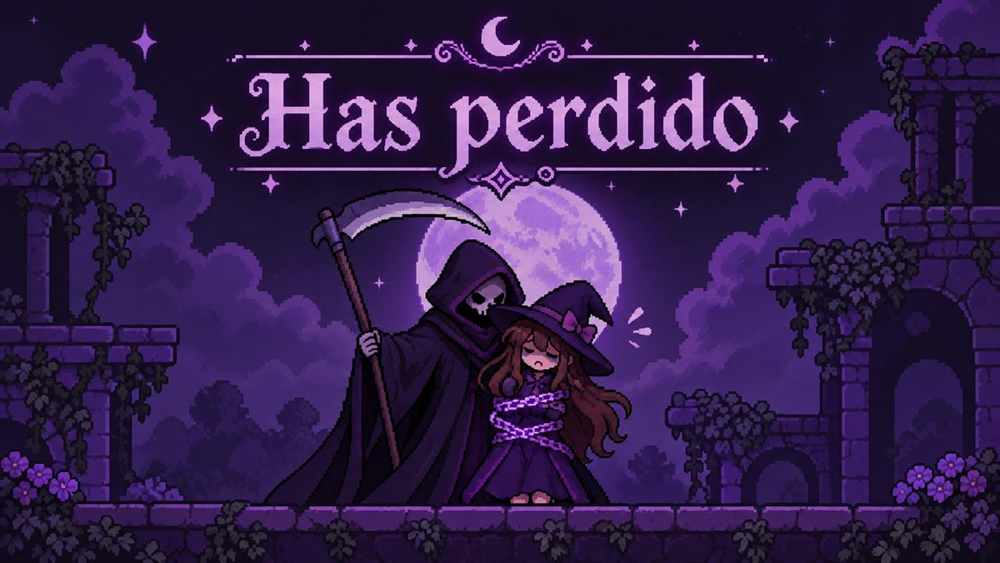
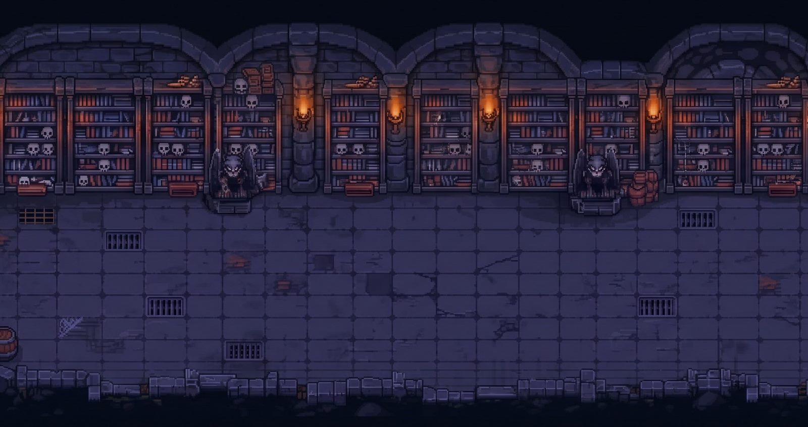
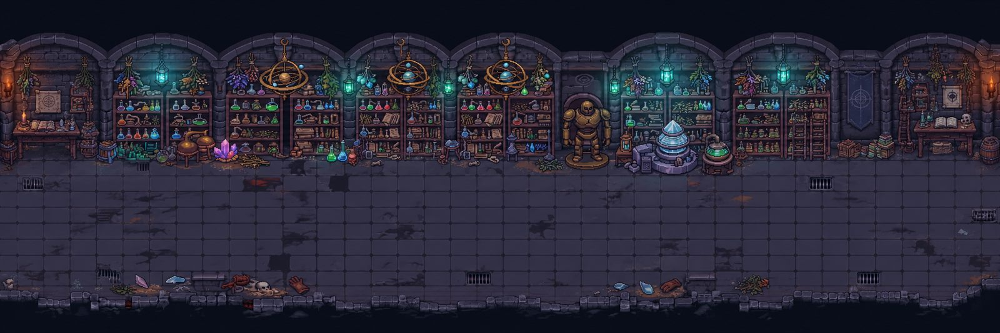
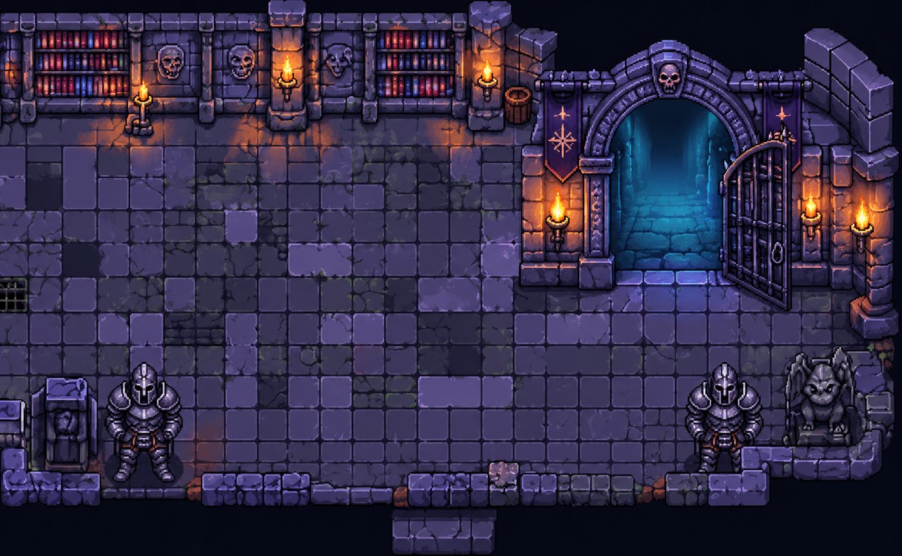
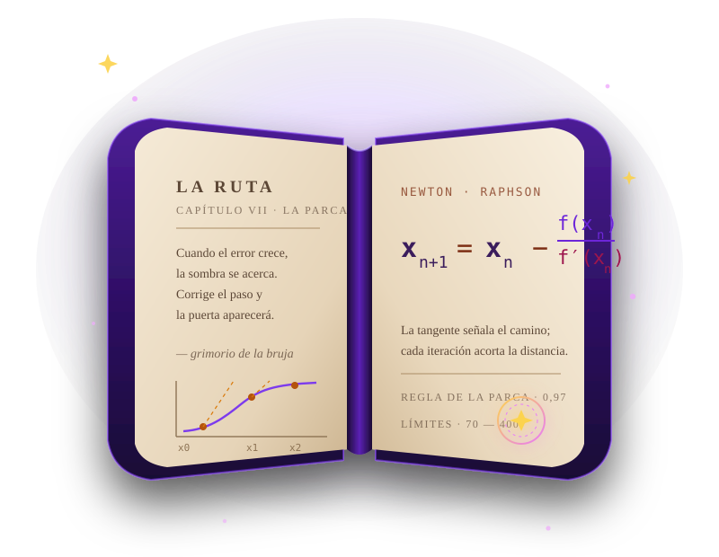

Windows
Archivo .exe
Descargá el ejecutable, guardalo en una carpeta y hacé doble clic para jugar.
- Versión2.2
- Tamaño146,7 MB
- RequiereWindows 10/11 · 64 bits
Una bruja huye de la Parca por una mazmorra pixelada. La distancia entre las dos la decide una fórmula matemática que se recalcula todo el tiempo.
Llevátelo a casa
Elegí tu plataforma. Son los mismos archivos de la versión 2.2 que usamos para jugar y probar el proyecto.
Archivo .exe
Descargá el ejecutable, guardalo en una carpeta y hacé doble clic para jugar.
Archivo .apk
Descargá el instalador en el celular y abrirlo desde la carpeta de descargas.
Es normal en programas sin firma digital. En la pantalla azul tocá Más información y después Ejecutar de todos modos. Si tu antivirus lo pone en cuarentena, restaurá el archivo y agregá la carpeta como excepción.
Al abrir el archivo, Android te va a pedir permiso para instalar apps de esa fuente: tocá Ajustes y activá Permitir desde esta fuente. Si Play Protect avisa que la app no es conocida, elegí Instalar de todos modos.
La historia
La bruja corre por una mazmorra buscando la salida. Atrás viene la Parca, y no se cansa: su velocidad se vuelve a calcular en cada instante para que la persecución sea justa.
Si la Parca te toca, perdés. Si llegás a la puerta mágica, ganás. En el medio hay pasillos, obstáculos y un rastro de posiciones que la Parca sigue para rodear lo mismo que rodeaste vos.
Dato: la velocidad de la Parca no está escrita a mano. Sale de resolver una ecuación con el método de Newton-Raphson, el mismo que se explica más abajo.

Escenarios de la mazmorra



Paso 1
Iterar es hacer lo mismo varias veces, pero mejorando en cada vuelta. No se trata de repetir por repetir: cada intento usa el resultado del anterior para quedar más cerca de la respuesta.
Elegís un número cualquiera como primera respuesta. No hace falta que sea bueno.
Reemplazás tu número en la fórmula y mirás cuánto se aleja de cero.
Usás ese error para calcular una respuesta nueva, más cerca de la buena.
Volvés al paso 2 con la respuesta nueva. Cada vuelta es una iteración.
Imaginá que buscás una emisora de radio. No sabés la frecuencia exacta, así que girás la perilla, escuchás cuánto ruido hay, corregís un poco y volvés a probar. Cada intento suena un poco mejor. Cuando casi no hay ruido, dejaste de buscar: llegaste. Newton-Raphson hace eso, pero con números: el ruido es el error y la perilla es la corrección.
Paso 2
Una raíz es el valor de x que hace que la función valga cero. Dicho de otra forma: es el número que estamos buscando para que la cuenta quede justa.
f(x) = x − 10
La raíz es x = 10, porque 10 − 10 = 0.
x = 8
f(8) = 8 − 10 = −2. La cuenta da negativo: nos quedamos cortos.
x = 13
f(13) = 13 − 10 = 3. La cuenta da positivo: nos pasamos.
x = 10
f(10) = 10 − 10 = 0. Ahí está la raíz.
Ojo: una función puede tener varias raíces, una sola o ninguna. El método encuentra la que le queda más cerca del punto donde arranca.
Paso 3
Esta es la receta completa. Asusta un poco a primera vista, pero cada pedazo tiene un trabajo simple.

xn+1 = xn − f(xn)f′(xn)
xn
La apuesta de esta vuelta. El subíndice n solo dice “la vuelta número n”.
f(xn)
El error: cuánto le falta o le sobra a esa apuesta para que la función dé cero.
f′(xn)
La derivada: qué tan inclinada va la curva en ese punto. Es la pista de dirección.
xn+1
La apuesta nueva. Se calcula con la anterior y queda más cerca de la raíz.
En palabras: a la apuesta actual le resto el error dividido por la inclinación. Si el error es grande, el salto es grande. Si la curva está muy inclinada, el salto es más corto para no pasarse.
Del papel al juego
En el juego, la incógnita no es un número abstracto: es la velocidad de la Parca en píxeles por segundo. La ecuación que se resuelve es esta:
f(x) = x − k · v
v = 250 px/s · k = 1,2 · x₀ = 200 px/s
Una sola iteración alcanza. La función es una recta, así que la tangente es la recta misma y cae justo en la raíz. En el juego el cálculo se repite cada frame porque v cambia mientras jugás.
Probalo vos
Cambiá la velocidad de la bruja, el multiplicador y el punto de partida. Abajo ves las mismas cuentas del ejemplo, las barras de velocidad y la gráfica de la función.
Dato real del juego: la velocidad que sale de la cuenta se recorta entre 70 y 400 px/s, para que la Parca nunca quede clavada ni vuele.
Cuando la función se curva
Hasta acá la función era una recta y un solo paso alcanzaba. Con una curva hacen falta varias vueltas. Miremos f(x) = x² − 2, cuya raíz es √2 ≈ 1,41421356, arrancando en x₀ = 1.
| Paso | xn | f(xn) | f′(xn) | xn+1 | Error |
|---|---|---|---|---|---|
| 0 | 1,000000 | −1,000000 | 2,000000 | 1,500000 | 0,085786 |
| 1 | 1,500000 | 0,250000 | 3,000000 | 1,416667 | 0,002453 |
| 2 | 1,416667 | 0,006944 | 2,833333 | 1,414216 | 0,000002 |
| 3 | 1,414216 | 0,000006 | 2,828431 | 1,414214 | 0,000000 |
El error es la distancia entre xn y la raíz real. En tres pasos pasó de 0,0858 a prácticamente cero.
Converger es justamente eso: acercarse cada vez más hasta que la diferencia deja de importar.
Para quien quiera programarlo
Esta es una versión general del método, con tolerancia y límite de vueltas. No es el código exacto del juego: es la misma idea, escrita para que la puedas reutilizar en cualquier proyecto.
# Versión general: sirve para cualquier función y su derivada.
func newton_raphson(f: Callable, df: Callable, x0: float,
tol: float = 0.000001, max_iter: int = 50) -> float:
var x: float = x0
for i in range(max_iter):
var fx: float = f.call(x)
if absf(fx) < tol:
return x
var dfx: float = df.call(x)
if absf(dfx) < 0.000001:
push_warning("Derivada casi cero en x = %f" % x)
return x
x = x - fx / dfx
push_warning("No convergió en %d iteraciones" % max_iter)
return x# La misma idea, sin tipos: fácil de probar en cualquier editor.
def newton_raphson(f, df, x0, tol=1e-6, max_iter=50):
x = x0
for _ in range(max_iter):
fx = f(x)
if abs(fx) < tol:
return x
dfx = df(x)
if abs(dfx) < 1e-12:
print("Derivada casi cero en x =", x)
return x
x = x - fx / dfx
print("No convergió en", max_iter, "iteraciones")
return xnewton_raphson(f, df, x0, tol, max_iter)
Recibe la función, su derivada, el punto de partida, la tolerancia y el máximo de intentos.
x = x0
La primera apuesta es el punto de partida que le pasamos.
for i in range(max_iter)
Pone un límite de vueltas para que el programa no se quede girando para siempre.
fx = f(x)
Evalúa la función: mide cuánto se equivoca la apuesta actual.
if abs(fx) < tol: return x
Si el error es más chico que la tolerancia, ya está: devuelve la respuesta.
dfx = df(x)
Calcula la derivada, o sea la inclinación de la curva en ese punto.
if abs(dfx) < 1e-12: return x
Protección: si la derivada es cero, no se puede dividir. Devuelve lo último que tenía.
x = x - fx / dfx
El paso de Newton: la corrección que acerca la apuesta a la raíz.
return x
Si se acabaron las vueltas sin converger, devuelve la mejor aproximación y avisa con un mensaje.
Por si queda alguna duda
Cada vuelta completa del cálculo. La primera iteración usa
x₀; la segunda usa el resultado de la primera, y así.
Si el método hace cuatro vueltas, hizo cuatro iteraciones.
El valor de x que hace que la función valga cero:
f(x) = 0. Es la respuesta que el método está buscando.
En el juego, la raíz es la velocidad justa de la Parca.
La inclinación de la curva en un punto. Se escribe f′(x) y
funciona como una brújula: dice para dónde sigue la curva y cuánto hay
que corregir. Si la función es una recta, la derivada es un número fijo.
El error máximo que estamos dispuestos a aceptar. Si la tolerancia es
0,000001, el método se detiene cuando la cuenta se equivoca
menos que eso. Cuanto más chica, más preciso y más lento.
Que las respuestas se acerquen cada vez más a la raíz hasta que la diferencia deje de importar. Si en vez de acercarse se alejan o saltan sin parar, el método no converge.
Cuando la derivada es cero en el punto de partida (la tangente es horizontal y no corta el eje), cuando el punto inicial está muy lejos de la raíz, cuando la función salta de un lado al otro sin acercarse, o cuando hay varias raíces y encuentra una distinta de la que buscabas.
Quiénes lo hicieron
Juego hecho en Godot con GDScript, pixel art y música propia. Esta página es la explicación del método que mueve a la Parca.